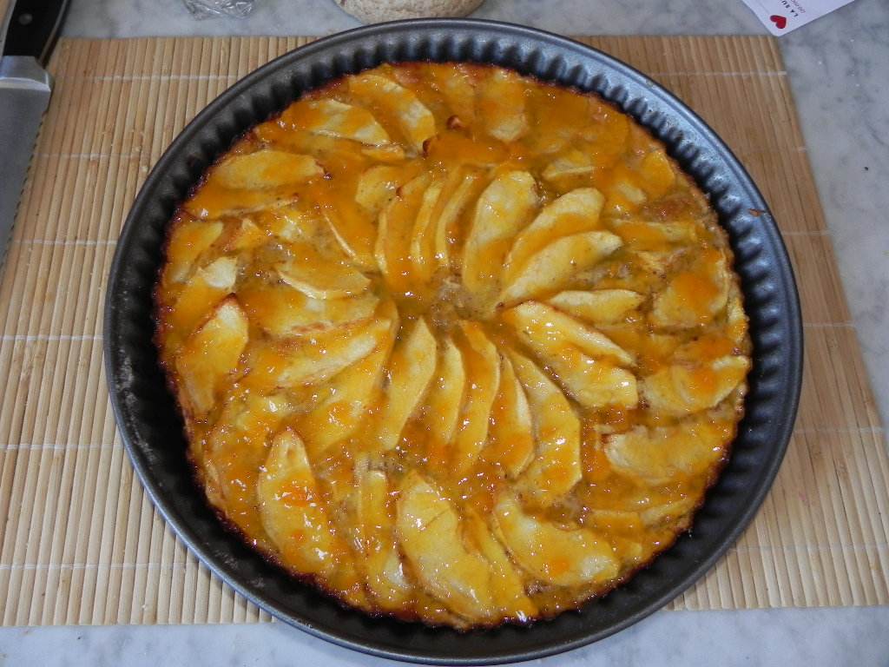

Apple cake is a popular dessert produced with the main ingredient of apples. Such a cake is made through the process of slicing this sweet fruit to add fragrance to a plain cake base. Traditional apple cakes go a step further by including various spices such as nutmeg or cinnamon, which give a unique flavour. Upon the addition of spices the batter can also be accompanied by crushed nuts, the most popular being walnuts and almonds.